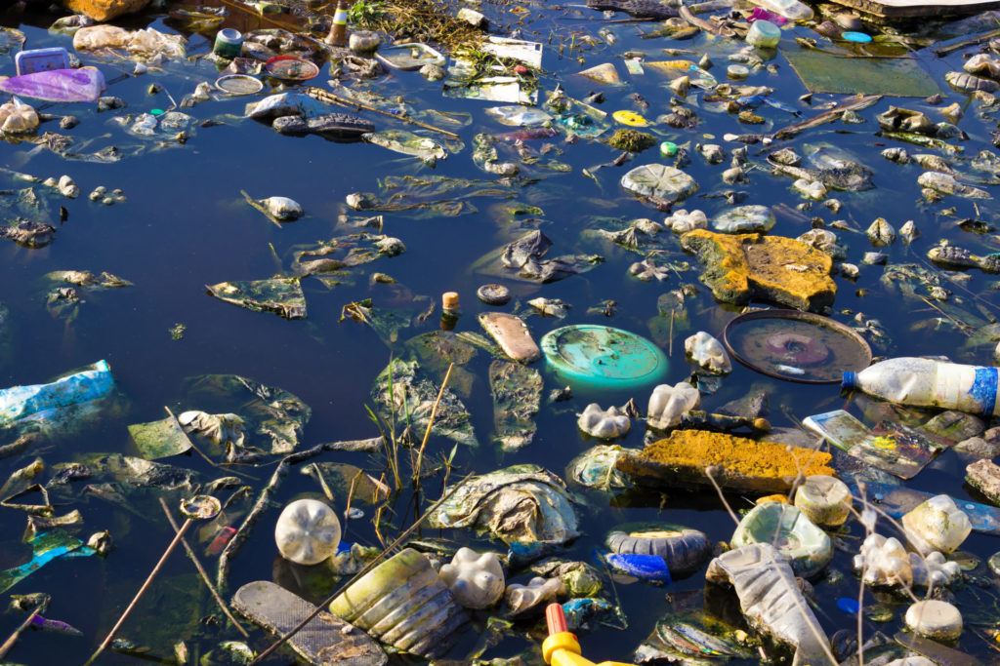

<link rel="stylesheet" href="estilo.css">
<header class="header">
    <div class="menu container">
      <label for="menu">
        
      </label>
      <nav class="navbar">
        <ul>

          <li><a href="#Tipos de contaminacion">Tipos de contaminación</a>
            <ul>
              <li><a href="index.html">Pagina principal</a></li>
              <li><a href="CTMNC.Aire.html">Aire</a></li>
              <li><a href="CTMNC.Suelo.html">Suelo</a></li>
              <li><a href="Economia circular.html">Economía circular</a></li>
              <li><a href="Gestion.html">Gestión de Residuos</a></li>
              <li><a href="RSDS.biomedicos.html">Residuos biomedicos</a></li>
              <li><a href="RSDS.electronicos.html">Residuos electrónicos</a></li>
            </ul></li>
        </ul>
      </nav>
    </div>

<h1>Contaminacion del Agua</h1>
<p>
    La contaminación del agua es un problema ambiental crítico que afecta tanto a la salud humana como a los ecosistemas. Se produce cuando sustancias
     nocivas, como productos químicos, residuos industriales, plásticos, pesticidas, y desechos humanos o animales, se introducen en ríos, lagos, mares
      y acuíferos, alterando la calidad del agua y volviéndola peligrosa para su consumo y uso.
<p>
<h2>Causas de la contaminación del agua</h2> 
</p>
1. Desechos industriales: Las fábricas y plantas industriales suelen verter productos químicos tóxicos y metales pesados en cuerpos de agua sin el tratamiento adecuado.
<p>
2. Agricultura: Los pesticidas, fertilizantes y productos químicos utilizados en la agricultura se filtran en el suelo y llegan a ríos y acuíferos, generando contaminación.
</p>
3. Aguas residuales y desechos humanos: En muchos lugares, las aguas residuales domésticas y los desechos sólidos no son tratados correctamente y terminan en el agua.
<p>
4. Plásticos: Los desechos plásticos son una de las principales fuentes de contaminación en los océanos y cuerpos de agua dulce, ya que se fragmentan en microplásticos que afectan a la fauna.
</p>
5. Derrames de petróleo: Estos derrames, que afectan principalmente los mares, destruyen ecosistemas y matan a miles de especies marinas.
<p>
Efectos de la contaminación del agua
</p>
Impacto en la salud humana: El consumo de agua contaminada puede causar enfermedades graves como cólera, hepatitis, disentería y, a largo plazo,
 problemas de desarrollo y enfermedades crónicas.
 <p>
 

</p>
